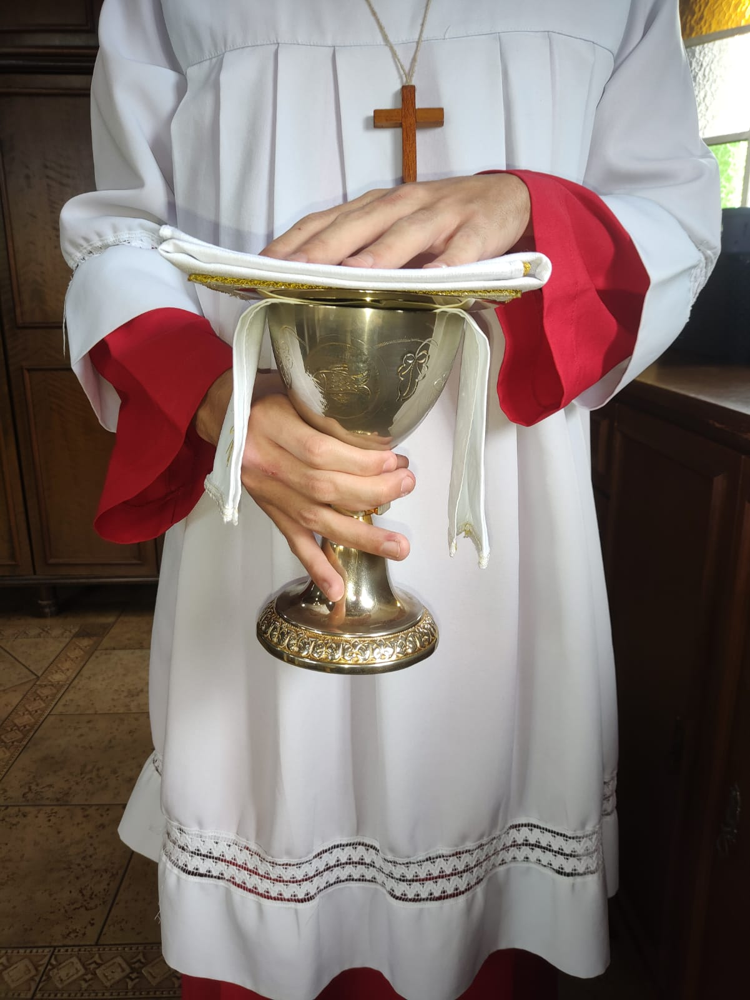
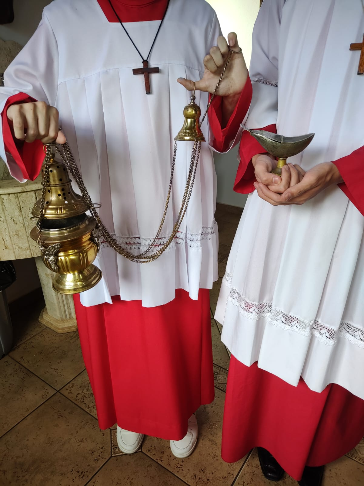
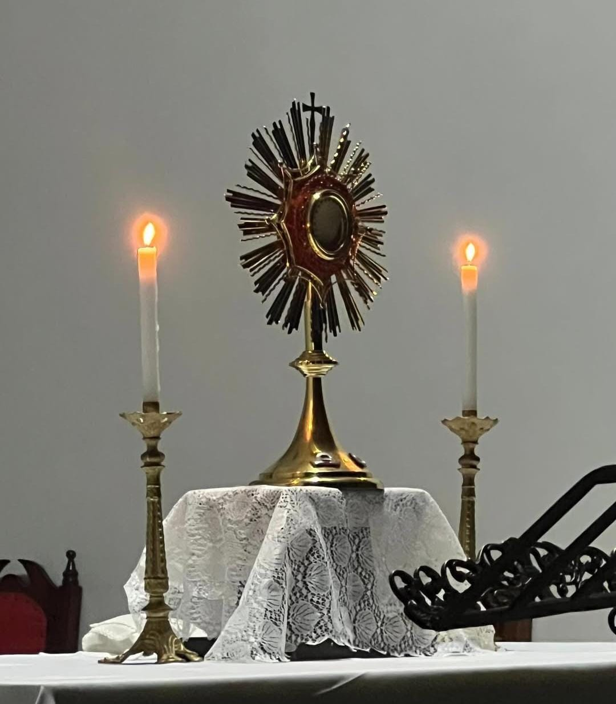
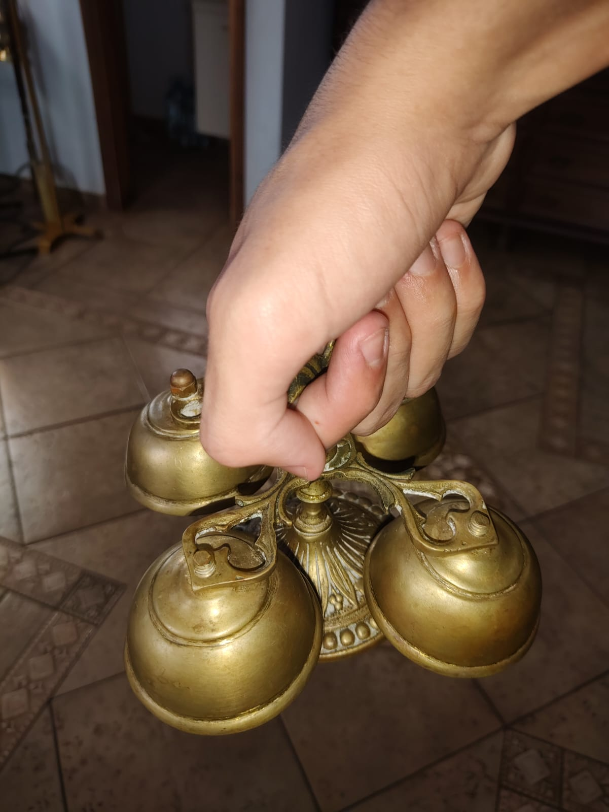
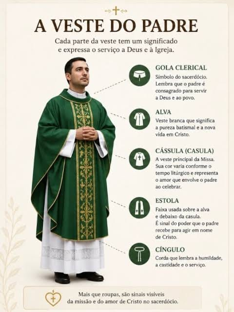
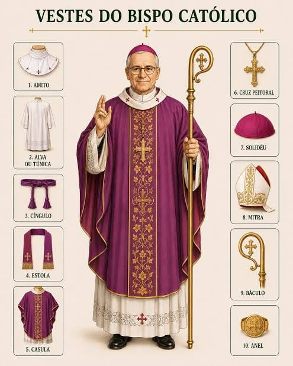
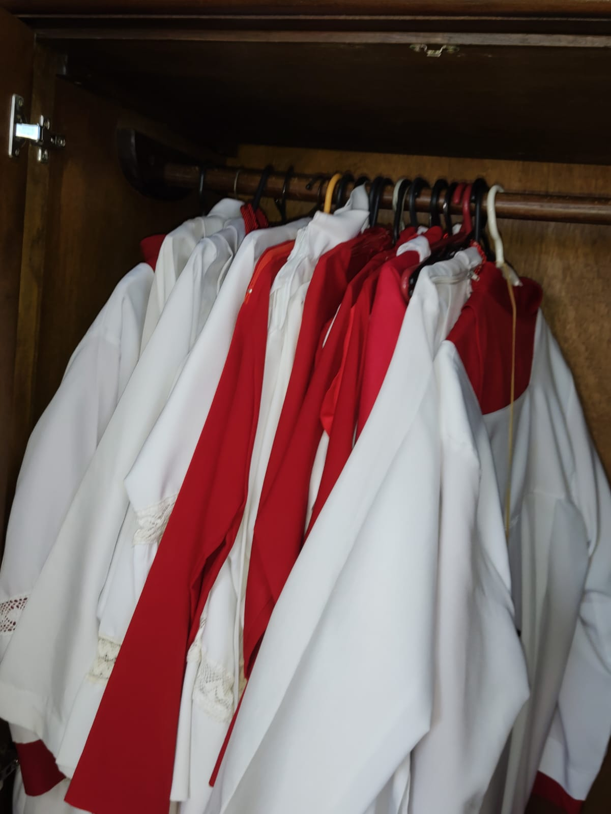
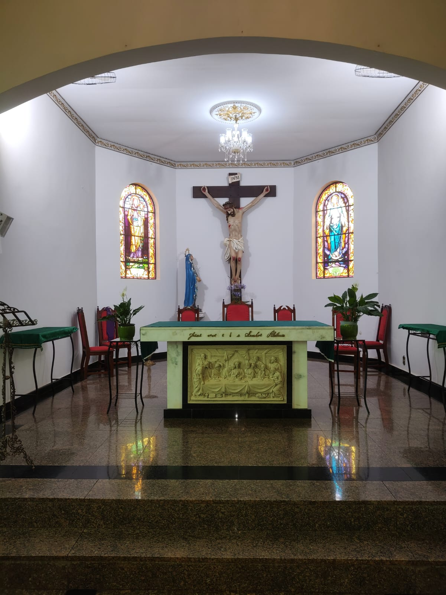
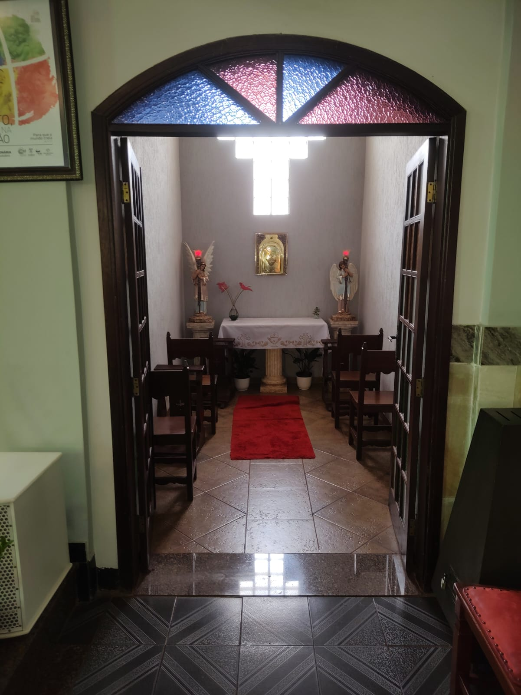
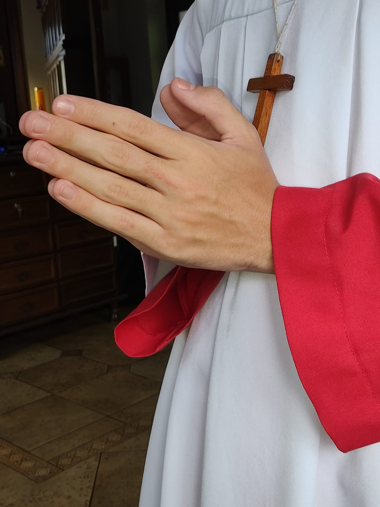

1. Introdução
Olá para você, jovem que quer ser um acólito ou já é! Essa página foi feita a fim de te ajudar a conhecer mais sobre esse ministério lindo que existe em nossa Igreja. Aqui, você verá o essencial para uma boa formação de acólitos e coroinhas competentes e humildes em seu serviço. Utilize essa página como consulta em caso de dúvidas, mas lembre-se sempre de conversar com seus colegas mais experientes, coordenadores e o pároco.
1.1 O que é um coroinha/acólito?
O coroinha é o menino ou menina, geralmente criança ou adolescente, que auxilia o padre e o diácono durante as celebrações da Igreja Católica, especialmente na Santa Missa e momentos como a exposição do Santíssimo. O acólito desempenha algumas funções a mais, pois possuem uma idade e maturidade maior se comparada a dos coroinhas.
A função dos coroinhas nasceu nos primeiros séculos do Cristianismo, quando crianças e jovens auxiliavam bispos e padres nas celebrações litúrgicas e no canto. O termo "coroinha" surgiu para designar os "meninos do coro", que respondiam às missas em latim e ajudavam no altar.
Com a reforma litúrgica e o uso das línguas vernáculas (como o português), o serviço deixou de ser apenas responder em latim e passou a enfatizar a participação ativa, o auxílio direto ao sacerdote e a harmonia da celebração. Em 1994, o Papa João Paulo II autorizou formalmente que meninas também servissem como coroinhas.
O serviço dos coroinhas ao altar é fundamental para a liturgia católica porque une o auxílio prático ao sacerdote com a formação espiritual e o testemunho de fé de crianças e jovens. Mais do que cumprir tarefas durante a celebração, o coroinha representa a comunidade junto ao altar e ajuda a tornar o rito mais digno, ordenado e orante.
Principais qualidades de um bom coroinha/acólito:
- Amor a Deus e à Eucaristia: servir com alegria, devoção e intimidade com Jesus, entendendo o altar como espaço sagrado.
- Pontualidade e assiduidade: cumprir a escala com responsabilidade, chegar com antecedência e avisar ou trocar com antecedência quando não puder ir.
- Atenção e postura: acompanhar os momentos da celebração, manter o olhar voltado para o que acontece no rito, evitar conversas ou distrações e cuidar da postura corporal e das vestes.
- Humildade e espírito de serviço: ajudar sem buscar destaque, ouvir o padre e os coordenadores e apoiar os coroinhas mais novos.
- Cuidado com o espaço e os objetos litúrgicos: manusear com zelo livros, velas, vasos e demais itens da celebração.
- Vontade de aprender: conhecer as partes da Missa, os símbolos e os nomes dos objetos litúrgicos.
- Testemunho no dia a dia: viver o respeito, a educação e a fé também em casa, na escola e na comunidade.
1.3 Nosso Padroeiro: São Tarcísio
O padroeiro dos acólitos, coroinhas, cerimoniários e ministros da eucaristia é São Tarcísio. São Tarcísio foi um jovem cristão do século III, martirizado em Roma por volta do ano 257, durante as perseguições do imperador Valeriano. Ele tinha 12 anos e ajudava o Papa de sua época, Sisto II.
Tarcísio se voluntariou para levar a Eucaristia aos prisioneiros e doentes, pois sua idade não levantaria suspeitas. No caminho foi abordado por jovens pagãos que queriam forçar São Tarcísio a revelar o que carregava. Ele resistiu fortemente, sendo espancado e apedrejado até morrer, mas não abriu mão das Sagradas Hóstias.
Um soldado romano que era secretamente cristão notou o jovem ferido no chão e foi atendê-lo, mas a Eucaristia já não estava mais em suas mãos. Acredita-se que ela se "fundiu" ao peito de Tarcísio, realizando assim sua primeira comunhão. Peçamos a intercessão de São Tarcísio para servir a Deus com amor e coragem diante dos desafios do mundo.

2. Formação Litúrgica
2.1 Ano Litúrgico e Cores
Diferente do calendário civil, o ano litúrgico não começa em janeiro, mas sim no período do Advento (nos meses de novembro/dezembro). A partir daqui, meditamos desde a preparação para o nascimento de Jesus, passando por sua vida terrena, morte, ressurreição, ascensão aos céus, demais solenidades (marianas, memórias de santos e devoções da Igreja) até a solenidade de Cristo Rei. Após isso, o ano litúrgico recomeça nesta ordem:
- Advento: Tempo de preparação para o nascimento de Jesus Cristo. Corresponde às 4 semanas que antecedem o Natal.
- Natal: Celebra a encarnação e o nascimento de Jesus, indo até a festa do Batismo do Senhor.
- Quaresma: 40 dias de conversão, jejum e oração até a Semana Santa e o Tríduo Pascal (Paixão, Morte e Ressurreição).
- Tempo Pascal: 50 dias de alegria pela ressurreição, encerrando-se em Pentecostes.
- Tempo Comum: Dividido em duas partes (após o Batismo do Senhor e após Pentecostes), foca nos ensinamentos e na vida pública de Jesus no cotidiano. Também há algumas solenidades espalhadas nesse período.
Cores Litúrgicas e seus significados:
-
Verde: Usado no Tempo Comum. Representa esperança, perseverança e a vida que floresce em Cristo.
-
Roxo: Usado na Quaresma, Advento e Missa pelos Falecidos (nesse último caso, pode ser substituída pela cor preta). Representa a penitência e meditação.
-
Branco/Dourado: Essas andam juntas. Representam a alegria, pureza, luz e glória. É usada no Tempo do Natal, Tempo Pascal, festas do Senhor (exceto a Paixão), de Nossa Senhora, dos anjos e dos santos que não foram mártires.
-
Vermelho: Representa paixão, martírio e o Espírito Santo. É usada no Domingo de Ramos, Sexta-feira Santa, Domingo de Pentecostes, celebrações da Paixão do Senhor, festas dos Apóstolos, Evangelistas e Mártires.
-
Rosa: É a menos utilizada. É a alegria no meio da penitência (um "alento" ou pausa no tempo de preparação). Usada no 3º Domingo do Advento (Gaudete) e 4º Domingo da Quaresma (Laetare).
2.2 Estrutura da Missa
Uma Missa convencional segue uma estrutura fácil de decorar, mas que requer atenção. Essa estrutura passa por algumas alterações, dependendo da solenidade do dia e se a Missa é dominical ou semanal:
1. Ritos Iniciais
- Procissão de entrada
- Saudação
- Ato penitencial
- Glória
- Oração do dia
2. Liturgia da Palavra
- Primeira leitura
- Salmo
- Segunda leitura
- Evangelho
- Homilia
- Credo
- Oração dos fiéis
3. Liturgia Eucarística
- Ofertório
- Preparação do altar
- Oração Eucarística
- Consagração
- Comunhão
4. Ritos Finais
- Avisos
- Bênção
- Envio
2.3 Funções do Acólito
Durante a Missa, os acólitos e coroinhas ajudarão o celebrante para uma execução sublime da Liturgia, executando certas funções.
- Cruciferário: Aquele que carrega a cruz processional;
- Ceroferário *: Cuidam das velas na procissão de entrada/Evangelho;
- Librífero *: Conduz e apresenta os livros sagrados (principalmente o Missal Romano);
- Turiferário *: Manuseia o turíbulo durante as Missas e adorações ao Santíssimo;
- Navetário/Naveteiro: Carrega a naveta, contendo incenso para o turíbulo. Acompanha o turiferário;
- Mitrífero: Responsável por segurar, conduzir e entregar a mitra (insígnia usada pelo bispo) durante as celebrações litúrgicas;
- Baculífero: Encarregado de segurar, cuidar e entregar o báculo (o cajado pastoral que simboliza o bispo como o Bom Pastor) durante celebrações com a presença do bispo.
Outros auxílios importantes durante a celebração:
- A utilização das galhetas;
- A purificação das mãos do celebrante;
- Uso da sineta;
- Colocar as âmbulas vazias e o purificatório no altar durante o Cordeiro de Deus;
- Levar as tampas das âmbulas à Capela do Santíssimo;
- Cuidar da purificação do cálice e recolhê-lo após o uso.
Preparação prévia: O acólito deve chegar com antecedência para verificar se os preparativos da Missa estão corretos, conferindo o Altar e demais objetos litúrgicos e paramentar-se antes do celebrante.
2.4 Objetos Litúrgicos
Aqui está o guia fundamental dos objetos litúrgicos para o conhecimento dos acólitos e coroinhas:

Foto: Cálice e Alfaias Toque para expandir
Foto: Turíbulo e Naveta Toque para expandir
Foto: Ostensório e Âmbula Toque para expandir
Foto: Galhetas, Lavabo e Sineta Toque para expandir- Cálice Conterá o Sangue de Jesus após a consagração. É acompanhado de outros objetos.
- Patena: Pratinho que contém a Hóstia Magna. Acompanha o cálice.
- Corporal: Tecido quadrado que serve para conter grãos da Hóstia Magna, caso essa os derrube ao ser partida. Acompanha o cálice.
- Pala: Tecido quadrado e rígido, tampa e protege a Hóstia Magna. Acompanha o cálice.
- Sanguíneo: Limpa o cálice, patena e âmbulas, retirando qualquer resquício da Eucaristia que poderia ser descartada incorretamente. Acompanha o cálice.
- Manustérgio: Toalhas usadas pelo celebrante e ministros para enxugar as mãos, antes de manusear as hóstias.
- Lavabo Conjunto de jarro com bacia, usada pelo celebrante para lavar as mãos antes de manusear as hóstias. É acompanhado pelo manustérgio do padre.
- Galhetas: 2 frascos que contém vinho e água. Usados no momento do ofertório e comunhão.
- Turíbulo: Carrega brasa, que solta fumaça perfumada graças ao incenso. Representa as súplicas da Igreja que sobem aos céus.
- Naveta: Em formato de barca, carrega o incenso que é usado no turíbulo.
- Aspersório/Caldeirinha: Carrega a água benta, que é aspergida nos fiéis e objetos que serão abençoados.
- Ostensório/Custódia: Carrega o Santíssimo (Jesus Eucarístico). Usado nas exposições e Missa de Corpus Christi.
- Âmbula/Cibório/Píxide: Recipiente que guarda as hóstias que estão consagradas. Se estiverem vazias, elas serão ocupadas pelas hóstias consagradas.
- Teca: Pequeno recipiente com hóstias menores, dedicadas aos doentes.
- Sineta/Carrilhão: Conjunto de sinos usados no momento da Consagração e em Missas mais Solenes, como a Vigília Pascal.
- Cruz processional: Crucifixo em uma haste extensa, usada na procissão de entrada/saída.
- Missal: Contém todo o rito da Missa, sendo usado pelo celebrante, mais notavelmente, na Liturgia Eucarística.
- Lecionários: Contém as leituras, salmo e Evangelho da Missa que é celebrada no dia. Existem 3: Dominical, Semanal e Santoral.
- Evangeliário: Reúne os trechos dos quatro Evangelhos para proclamação nas celebrações, sobretudo aos domingos, festas e solenidades. Seu uso é mais comum em catedrais.
- Livros de bênçãos: Esses são usados mais pelo padre, mas ainda é importante conhecê-los. Existem livros para bênçãos diversas, casamentos, crisma, etc.
- Círio Pascal: Usado desde a Vigília Pascal até Pentecostes. Representa a luz de Cristo em sua ressurreição.
- Acendedor do Círio: Usado para acender o Círio Pascal. Não é exatamente um objeto litúrgico.
- Coroa do Advento: Representa o período de preparação para o Natal. É formado por 4 velas.
- Castiçais: Carregam as velas usadas pelos acólitos. Também podem se referir aos castiçais que ficam sobre o Altar.
- Tochas: Função semelhante à das velas, mas usada em procissões e momentos mais solenes.


2.5 Vestes Litúrgicas
É importante conhecermos as vestes litúrgicas que o celebrante e a equipe de celebração usam, já que seu uso é contínuo e frequente.

Foto: Vestes do Padre Toque para expandir
Foto: Vestes do Bispo Toque para expandir
Foto: Vestes dos Acólitos/Coroinhas Toque para expandirVestes do Padre
- Batina/Sotaina: A roupa preta longa usada por membros do clero. É inteiramente preta, tendo o clesma (parte branca inserível na gola) como única variação de cor. É para o uso cotidiano, mas não obrigatória.
- Amito: Tecido branco colocado nos ombros para cobrir o pescoço. Anda caindo em desuso.
- Alva: Túnica branca, representando a pureza de Deus.
- Cíngulo: Cordão usado para ajustar a alva. Símbolo de castidade e serviço.
- Estola: Tecido que fica nos ombros, é um sinal de sua missão.
- Casula: Veste que cobre todo o resto.
- Manípulo: "Toalha" amarrada no braço esquerdo do celebrante, para enxugar o suor ou lágrimas. Vem caindo em desuso, principalmente após a reforma na liturgia graças ao Concílio Vaticano II.
- Barrete: Chapéu de 4 pontas e um pompom no centro. Também está caindo em desuso no cotidiano, mas é bem comum entre os cardeais.
- Roquete: Espécie de sobrepeliz branca com mangas mais estreitas, usada exclusivamente por prelados (como bispos e arcebispos) sobre a batina em cerimônias fora da missa.


){kind=link}


Vestes do Bispo
- Batina: Diferente do padre, o bispo usa uma batina roxa/violácea (ou preta com detalhes roxos).
- Solidéu: Chapéu redondo de cor violácea, usado no topo da cabeça.
- Cruz Peitoral: Crucifixo suspenso por uma corda ou corrente.
- Anel episcopal: Representa sua união com a diocese e a Igreja.
- Báculo: Cajado curvo, representando seu papel como pastor da comunidade.
- Mitra: Chapéu pontiagudo que representa sua autoridade.
- Pálio episcopal: Usado somente pelos arcebispos e papa, é uma faixa de lã com cruzes, representando a união e serviço do Bom Pastor.


Vestes do Diácono
- Dalmática: Semelhante à casula, mas com estampas diferentes. Também pode ser usada por um bispo por baixo da casula, em ocasiões muito solenes.

Vestes do Acólito e Coroinha
- Túnica: Peça vermelha (meninos) ou branca (meninas), representando a pureza e sacrifício.
- Pala: Capa curta vermelha usada pelas coroinhas. É semelhante à mozeta, usada por membros do clero.
- Cíngulo: Mesma função do cíngulo dos membros do clero, mas de cor vermelha, ao invés de branco.
- Sobrepeliz: Veste semelhante a uma alva curta, usada pelos acólitos. Semelhante ao roquete.
- Cruz peitoral: Cruz pendurada em um cordão. Em alguns locais, é substituído pelo Tau (cruz de São Francisco de Assis), com os 3 nós na corda.
2.6 Partes da Igreja e 2.7 Gestos
2.6 Partes da Igreja

Foto: Presbitério, Altar e Ambão Toque para expandir
Foto: Sacrário e Credência Toque para expandir- Altar: Grande "mesa" central, onde o sacrifício da Missa é celebrado.
- Ambão: Local onde se faz a leitura.
- Sacrário/Tabernáculo: "Cofre" onde se armazena as Hóstias Consagradas. É Jesus presente e vivo. Em algumas Igrejas mais antigas, o Sacrário faz parte do Presbitério.
- Presbitério: Área onde o celebrante e seus auxiliares se encontram. Esse espaço abriga o Altar e ambão.
- Nave: É a parte central de uma igreja, destinada ao público e aos fiéis para acompanharem as celebrações.
- Sacristia: Local onde ficam guardados os objetos litúrgicos, vestes e demais pertences da Igreja. Aqueles que vão servir na Missa se arrumam aqui.
- Credência: Mesas laterais do Altar, onde ficam os objetos litúrgicos que serão usados na Missa.
- Capela do Santíssimo: Local de silêncio e recolhimento, pois abriga o Sacrário. Possui cadeiras e genuflexórios para a oração.
2.7 Gestos e Postura
O acólito deve permanecer em posição pronta e comportada, com as mãos postas em sinal de oração. Assim, aquele que está servindo permanece discreto, sem tirar a atenção da Missa. Deve-se evitar fazer caretas, dar risada, se comunicar com os outros no presbitério em voz alta ou tomar posturas que chamem a atenção.

Foto: Mãos Postas Toque para expandirTipos de reverência em momentos específicos da Missa:
- Inclinação simples: Abaixa-se levemente a cabeça. Realizada quando Maria ou o santo padroeiro/do dia é mencionado.
- Inclinação com os ombros: Um pouco mais profunda, realizada com menções a Jesus Cristo.
- Inclinação profunda: Inclinação do tórax para frente. Usada exclusivamente para a Santíssima Trindade e ao passar na frente do Altar.
- Genuflexão: Usada ao passar na frente do Sacrário. Encosta-se o joelho direito no chão. Quando as Espécies Consagradas estão expostas, deve-se ajoelhar com ambos os joelhos no chão.
3. Conteúdo Adicional
3.1 Orações que o acólito deve saber
3.2 Virtudes de um bom cristão
- Humildade
- Obediência
- Caridade
- Paciência
- Disciplina
3.2 Vida de Oração e Espiritualidade
Todos devem ter uma vida de oração constante, e os acólitos não são exceção. Devemos entregar nosso dia e dificuldades a Deus, agradecer pela oportunidade de servi-Lo no Altar, ter uma leitura frequente da Bíblia para conhecer mais Nosso Senhor e adorar a Jesus Eucarístico.
Dicas: reserve um momento do seu dia para orar, faça pequenas jaculatórias durante o dia, confesse-se regularmente, leia a liturgia diária (disponível em sites da internet), pratique o exame de consciência e conheça a vida dos santos.
3.3 Escala
As escalas são montadas de acordo com a programação mensal da paróquia e a disponibilidade de cada um. É de suma importância a responsabilidade e compromisso de cada um, para o melhor cumprimento possível. Em ocasiões onde você não conseguirá comparecer a uma Missa que estava escalado, avise com antecedência, para que alguém vá em seu lugar ou possa substituir o dia com você. Em casos de emergência, onde não é possível trocar com alguém, deve-se ao menos avisar no grupo.
3.4 Estudo
- Catecismo da Igreja Católica: Suma de toda a catequese e doutrina da Igreja, promulgada por São João Paulo II;
- Missal Romano: Crucial para uma melhor compreensão da liturgia e ritos na Missa;
- Imitação de Cristo: Ainda que antigo, apresenta conhecimentos atemporais para a santificação do indivíduo, com ensinamentos valiosos;
- IGMR (Instrução Geral do Missal Romano): Muito técnico, mas um complemento excelente para aqueles que querem conhecer melhor a Liturgia e já conhecem o Missal.
3.5 Orações Eucarísticas
Conhecer as Orações Eucarísticas e suas peculiaridades nos ajuda a conhecer o rito da Missa e a servir melhor ao Altar. Aqui, você pode acessar todas as Orações Eucarísticas para um estudo mais aprofundado, retiradas diretamente do Missal Romano.
3.6 Contatos
Em caso de dúvidas, trocas na escala ou informações sobre a pastoral, entre em contato pelos canais abaixo: